Пояснения к сайту
Большая часть информации была взята с сайта htmlbook
Ссылки на дополнительные ресурсы указаны к каждому вопросу при нажатии на *
Все теги выделены коралловым цветом, все атрибуты выделены светло-морским-зеленым цветом, все объекты выделены светлым небесно-синим, все ссылки, кроме навигации, к тому же, подчеркнуты
Сайт рекомендуется просматривать на компьютере для интерактивности. Если возникают какие-либо проблемы с сайтом, пожалуйста, напишите мне в личку в вк, не стесняйтесь :)
Этот небольшой проект занял у меня неадекватное количество времени и итоговый HTML файл получился длиной более 1000 строк, так что я ожидаю от Вас... обычного спасибо ;)
Также, да, не пытайтесь присвоить этот сайт себе, спасибочки ;)
1. Опишите синтаксис тегов HTML *
То, что вы видите в угловых скобках < и > называется тегами HTML. Они определяют, где что-то начинается и где оно заканчивается.
Каждый из тегов несёт определённый смысл. В нашем случае <р> обозначает абзац текста.
Пример
<p>Если Тетрис и научил меня чему-то, так это тому, что ошибки накапливаются, а достижения исчезают.</p>
Результат выполнения кода из примера
Если Тетрис и научил меня чему-то, так это тому, что ошибки накапливаются, а достижения исчезают.
2. Опишите HTML тег <!DOCTYPE>. Приведите пример использования тега <!DOCTYPE> в синтаксисе языка HTML *
Элемент <!DOCTYPE> предназначен для указания типа текущего документа — DTD (document type definition, описание типа документа). Это необходимо, чтобы браузер понимал, как следует интерпретировать текущую веб-страницу, поскольку HTML существует в нескольких версиях
Чтобы браузер "не путался" и понимал, согласно какому стандарту отображать веб-страницу и необходимо в первой строке кода задавать <!DOCTYPE>.
Пример
<!DOCTYPE html>
<!-- Дальше пишется остальной код веб-страницы -->
3. Опишите HTML тег <address>. Приведите пример использования тега <address> в синтаксисе языка HTML *
Тег <address> предназначен для хранения информации об авторе и может включать в себя любые элементы HTML вроде ссылок, текста, выделений и т.д. Планируется, что поисковые системы будут анализировать содержимое этого тега для сбора информации об авторах сайтов.
Пример
<address>
Этот партал зделан сабствинаручно веб-дизайнером Ваней Шапочкиным в праграме Блакнот. Если вы хатите взять маи статьи к сибе на сайт то спрасите мое разришение.
</address>
Результат выполнения кода из примера
Этот партал зделан сабствинаручно веб-дизайнером Ваней Шапочкиным в праграме Блакнот. Если вы хатите взять маи статьи к сибе на сайт то спрасите мое разришение.4. Опишите HTML тег <article>. Приведите пример использования тега <article> в синтаксисе языка HTML *
Тег <article> задает содержание сайта вроде новости, статьи, записи блога, форума или др.
Пример
<article>
История о том, как возле столовой появились загадочные розовые
следы с шестью пальцами, и почему это случилось.
</article>
Результат выполнения кода из примера
5. Опишите HTML тег <audio>. Приведите пример использования тега <audio> в синтаксисе языка HTML *
Добавляет, воспроизводит и управляет настройками аудиозаписи на веб-странице. Путь к файлу задается через атрибут src или вложенный тег <source>. Внутри контейнера <audio> можно написать текст, который будет выводиться в браузерах, неработающих с этим тегом.
Пример
<audio controls>
<source src="src/train.mp3" type="audio/mpeg">
Тег audio не поддерживается вашим браузером.
<a href="audio/train.mp3">Скачайте музыку</a>.
</audio>
Результат выполнения кода из примера
6. Опишите HTML тег <body>. Приведите пример использования тега <body> в синтаксисе языка HTML *
Элемент <body> предназначен для хранения содержания веб-страницы (контента), отображаемого в окне браузера. Информацию, которую следует выводить в документе, следует располагать именно внутри контейнера <body>. К такой информации относится текст, изображения, теги, скрипты JavaScript и т.д.
Пример
<!DOCTYPE HTML>
<html>
<head>
<!-- Этот раздел предназначен для заголовка страницы и технической информации. -->
</head>
<body>
<!-- А здесь надо размещать все, что хочется увидеть на странице. -->
</body>
</html>
7. Опишите HTML тег <code>. Приведите пример использования тега <code> в синтаксисе языка HTML *
Тег <code> предназначен для отображения одной или нескольких строк текста, который представляет собой программный код. Сюда относятся имена переменных, ключевые слова, тексты функции и т.д. Браузеры обычно отображают содержимое контейнера <code> как моноширинный текст уменьшенного размера.
Для создания этого сайта данный тег используется в приведении каждого примера
Пример
<code>
function checkParent (src, dest) { <br>
while (src != null) { <br>
if (src.tagName == dest) return src <br>
src = src.parentElement <br>
} <br>
return null <br>
}
</code>
Результат выполнения кода из примера
function checkParent (src, dest) {
while (src != null) {
if (src.tagName == dest) return src
src = src.parentElement
}
return null
}
8. Опишите HTML тег <dl>. Приведите пример использования тега <dl> в синтаксисе языка HTML *
Тег <dl> входит в тройку элементов <dl>, <dt>, <dd>, предназначенных для создания списка определений. Каждый такой список начинается с контейнера <dl>, куда входит тег <dt> создающий термин и тег <dd> задающий определение этого термина.
Пример
<dl>
<dt>GIF</dt>
<dd>Формат графических файлов, широко применяемый при создании сайтов. GIF использует 8-битовый цвет и эффективно сжимает сплошные цветные области, при этом сохраняя детали изображения.</dd>
<dt>JPEG</dt>
<dd>Популярный формат графических файлов, широко применямый при создании сайтов и хранения изображений. JPEG поддерживает 24-битовый цвет и сохраняет яркость и оттенки цветов в фотографиях. Данный формат называют сжатием с потерями, поскольку алгоритм JPEG выборочно отвергает данные. Метод сжатия может исказить деталь в рисунке, особенно содержащий текст или изображение с четкими краями. Формат JPEG не поддерживает прозрачность, когда вы сохраняете фотографию в формате JPEG, прозрачные пиксели заполняются определенным цветом.</dd>
</dl>
9. Опишите HTML тег <figure>. Приведите пример использования тега <figure> в синтаксисе языка HTML *
Используется для группирования любых элементов, например, изображений и подписей к ним.
В примере я добавил обводку для элемента <figure> для наглядной демонстрации работы элемента :)
Пример
<figure>
<p>Софийский</p>
<p>собор</p>
</figure>
<figure>
<p>Польский</p>
<p>котел</p>
</figure>
Результат выполнения кода из примера
Софийский
собор
Польский
котел
10. Опишите HTML тег <html>. Приведите пример использования тега <html> в синтаксисе языка HTML *
Тег <html> является контейнером, который заключает в себе все содержимое веб-страницы, включая теги <head> и <body>. Открывающий и закрывающий теги <html> в документе необязательны, но хороший стиль диктует непременное их использование.
Пример
<!DOCTYPE HTML>
<html>
<head>
<!-- Этот раздел предназначен для заголовка страницы и технической информации. -->
</head>
<body>
<!-- А здесь надо размещать все, что хочется увидеть на странице. -->
</body>
</html>
11. Опишите HTML тег <keygen>. Приведите пример использования тега <keygen> в синтаксисе языка HTML *
Используется для генерации пары ключей — закрытого и открытого. Когда форма отправляется на сервер, закрытый ключ сохраняется на локальном компьютере, а открытый ключ передается вместе с формой. Сами ключи необходимы для шифрования и расшифровки данных, создания и проверки цифровой подписи.
Тег <keygen> помещается в контейнер <form>. Закрывающий тег не обязателен.
Этот тег более не работает и никем не используется
Пример
<form action="demo_keygen.asp" method="get">
<keygen name="rsaPublicKey" keytype="RSA">
Имя пользователя: <input type="text" name="usr_name">
<input type="submit">
</form>
Результат выполнения кода из примера
12. Опишите синтаксис HTML элементов *
Элемент — это набор из тегов и содержания. Теги чаще всего идут парами: открывающий ( <тег> ) и закрывающий ( </тег> ). Между ними находится то, что попадает под действие этого тега. Открывающий тег может содержать дополнительную информацию — атрибуты и значения атрибутов.
13. Опишите атрибут HTML style. Приведите пример использования атрибута style в синтаксисе языка HTML *
Атрибут style применяется для определения стиля элемента с помощью правил CSS.
Пример
<h4 style="color: lightgreen">Привет!</h4>
Результат выполнения кода из примера
Привет!
14. Опишите атрибут HTML class. Приведите пример использования атрибута class в синтаксисе языка HTML *
Задает стилевой класс, который позволяет связать определенный тег со стилевым оформлением. В значении допускается указывать сразу несколько классов, разделяя их между собой пробелом.
Пример
<!-- Это код из HTML файла -->
<h4 class="green-bg">Текст с зеленым фоном</h4>
/* Это код из CSS файла */
.green-bg {
background-color: lightgreen;
color: black;
}
Результат выполнения кода из примера
Текст с зеленым фоном
15. Опишите атрибут HTML dir. Приведите пример использования атрибута dir в синтаксисе языка HTML
Задает направление и отображение текста — слева направо или справа налево. Браузеры обычно самостоятельно различают направление текста, если он задан в кодировке Юникод, но с помощью атрибута dir можно указать, в каком направлении отображать текст. Для арабских и еврейских символов приоритетным является направление, заложенное в Юникод, поэтому на них атрибут dir действовать не будет.
Значения данного атрибута пишутся следующим образом: "rtl" означает right to left (справа налево).
Является аналогом атрибута text-align. В нем значения имеют более очевидные названия: left, right.
Пример
<body>
<p dir="rtl">שבת — суббота</p>
<p>В ашкеназском произношении звучит как «ша́бос» (идиш «ша́бес»), а в сефардском — как «шаба́т».</p>
</body>
Результат выполнения кода из примера
שבת — суббота
В ашкеназском произношении звучит как «ша́бос» (идиш «ша́бес»), а в сефардском — как «шаба́т».
16. Опишите атрибут HTML hidden. Приведите пример использования атрибута hidden в синтаксисе языка HTML *
Скрывает содержимое элемента от просмотра. Такой элемент не отображается на странице, но доступен через скрипты.
Обычно такое используется для промежуточной передачи данных между страницами или отправления какого-либо значение, которое необязательно / нежелательно для просмотра пользователем.
Пример
<p hidden>Спрятанный текст</p>
<p>Видимый текст</p>
Результат выполнения кода из примера
Спрятанный текст
Видимый текст
17. Опишите атрибут HTML lang. Приведите пример использования атрибута lang в синтаксисе языка HTML *
Текст документа может быть набран как на одном языке, так и содержать вставки на других языках, которые могут различаться по своим правилам оформления текста. Например, для русского, немецкого и английского языка характерны разные кавычки, в которые берется цитата. Чтобы указать язык, на котором написан текст внутри текущего элемента и применяется атрибут lang. Браузер использует его значение для правильного отображения некоторых символов.
Пример
<body>
<p>Цитата на французском языке: <q lang="fr">Ce que femme veut, Dieu le veut</q>.</p>
<p>Цитата на немецком: <q lang="de">Der Mensch, versuche die Gotter nicht</q>.</p>
<p>Цитата на английском: <q lang="en">То be or not to be</q>.</p>
</body>
Результат выполнения кода из примера
Цитата на французском языке: Ce que femme veut, Dieu le veut
.
Цитата на немецком: Der Mensch, versuche die Gotter nicht
.
Цитата на английском: То be or not to be
.
18. Опишите атрибут HTML tabindex. Приведите пример использования атрибута tabindex в синтаксисе языка HTML *
Атрибут tabindex устанавливает порядок получения фокуса при переходе между элементами с помощью клавиши Tab. Переход происходит от меньшего значения к большему, например от 1 к 2, затем к 3 и так далее. При этом строгая последовательность не важна, допускается пропускать какие-то числа и начинать с любой цифры. Если значения tabindex у элементов совпадают, тогда учитывается их порядок появления в коде.
Пример
<body>
<p>Нажмите кнопку Tab для перехода между элементами</p>
<p><button tabindex="6">Шестой</button></p>
<p><button tabindex="7">Седьмой</button></p>
<p><button tabindex="5">Пятый</button></p>
<p><button tabindex="1">Первый</button></p>
<p><button tabindex="3">Третий</button></p>
<p><button tabindex="2">Второй</button></p>
<p><button tabindex="4">Четвертый</button></p>
</body>
Результат выполнения кода из примера
Нажмите кнопку Tab для перехода между элементами
19. Опишите каскадные (многоуровневые таблицы) стилей (CSS) *
Каскадные таблицы стилей (Cascading Style Sheets, CSS) — это стандарт, определяющий представление данных в браузере. Если HTML предоставляет информацию о структуре документа, то таблицы стилей сообщают как он должен выглядеть.
Стиль — это совокупность правил, применяемых к элементу гипертекста и определяющих способ его отображения. Стиль включает все типы элементов дизайна: шрифт, фон, текст, цвета ссылок, поля и расположение объектов на странице.
Таблица стилей — это совокупность стилей, применимых к гипертекстовому документу.
Каскадирование — это порядок применения различных стилей к веб-странице.
Далее идет пример, показанный в примере ранее
Пример
.green-bg {
background-color: lightgreen;
color: black;
}
Пояснения к примеру
.green-bg — это селектор. Если быть точнее, селектор класса. Объяснения к этому можно найти в ответе на 30 вопрос.
Селектор определяет для чего Вы хотите написать стили.
background-color и color — это свойства. Переводятся "фон-цвет" (цвет фона) и "цвет". Свойства определяют для какой части Вы хотите изменить стили.
black и lightgreen — это значения. Они определяют, к примеру, цвет фона или цвет текста.
Пара свойство: значение называется описанием.
Эта пара вместе с селектором называется правилом.
Рисунок с наглядными объяснениями можно найти здесь
20. Опишите подключение CSS к документу, если описание стилей находится в отдельном файле *
Наиболее правильный вариант определения общих стилей для сайта - это подключение внешнего файла CSS с помощью тега <link>. В атрибуте href необходимо указать URL адрес файла, содержащего набор стилей CSS. Атрибуты rel="stylesheet" и type="text/css" указывают, что указанный файл является таблицей стиля в формате CSS.
Пример
<head>
<link rel="stylesheet" type="text/css" href="style.css">
</head>
21. Опишите подключение CSS к документу, если стили внутри описаны внутри документа *
Подобное возможно при использовании тега <style>.
Тег <style> применяется для определения стилей элементов веб-страницы. Тег <style> необходимо использовать внутри контейнера <head>. Можно задавать более чем один тег <style>.
Пример
<head>
<style type="text/css">
/* Здесь пишутся правила */
</style>
</head>
22. Опишите объект document языка JavaScript. Приведите пример использования объекта document в синтаксисе языка JavaScript *
Объект document – основная "входная точка". С его помощью мы можем что-то создавать или менять на странице.
Это слишком крупная тема для глубокого объяснения на этом сайте, поэтому я советую почитать про это на других сайтах, которые способны это объяснить го-ораздо лучше меня :)
Пример, показанный здесь невероятно базовый и даже и близко не показывает весь функционал объекта document, тем не менее, я считаю, что хорошо демонстрирует свой потенциал, используя лишь 7 строчек кода.
Пример
<script>
function changeBackground() {
document.body.style.background = 'lightseagreen';
setTimeout(() => {
document.body.style.background = ''
}, 1000);
}
</script>
Результат
23. Опишите объект array языка JavaScript. Приведите пример использования объекта array в синтаксисе языка JavaScript *
Массив (Array) в JavaScript является глобальным объектом, который используется для создания массивов; которые представляют собой высокоуровневые спископодобные объекты.
В примере показано создание массива и вывод в консоль его длины при помощи метода .length
Пример
let fruits = ['Яблоко', 'Банан'];
console.log(fruits.length);
// 2
Данный пример даже не начинает раскрывать всей темы с массивами, поэтому советую два замечательных сайта с невероятными объяснениями: mdn web docs, откуда я взял пример и объяснение самого объекта Array и современный учебник JavaScript.
24. Опишите объект string языка JavaScript. Приведите пример использования объекта string в синтаксисе языка JavaScript *
Объект String используется, чтобы представить и конструировать последовательность символов (тип данных Char).
Пример
'кот'[0] // вернёт "к"
let cat = 'котёнок'
cat.length // вернёт 7
let dog = 'собАчкА'
dog.toUpperCase() // вернёт "СОБАЧКА"
let moose = 'лось'
moose.indexOf('о') // вернёт 1
moose.indexOf('ы') // вернёт -1 (так как этого символа нет в строке)
25. Опишите операторы управления в языке JavaScript: операторы цикла. Приведите примеры использования объекта операторов цикла в синтаксисе языка JavaScript *
При написании скриптов зачастую встаёт задача сделать однотипное действие много раз.
Например, вывести товары из списка один за другим. Или просто перебрать все числа от 1 до 10 и для каждого выполнить одинаковый код.
Для многократного повторения одного участка кода предусмотрены циклы.
Цикл while
Код из тела цикла выполняется, пока условие истинно
while (условие) {
// код или "тело цикла"
}
Пример
Цикл ниже выводит i пока i < 3
Метод document.write описан в ответе на 27-ой вопрос.
let i = 0
while (i < 3) {
document.write('<p>Переменная i = ', i, '</p>')
i++
}
Результат выполнения кода из примера
Цикл for
Более сложный, но при этом самый распространённый цикл — цикл for.
Выглядит он следующим образом
for (начало; условие; шаг) {
// тело цикла
}
Пример
for (let i = 0; i < 3; i++) {
document.write('<p>Переменная i = ', i, '</p>')
}
Результат выполнения кода из примера
Пояснения к примеру
| Часть | Код | Объяснение |
|---|---|---|
| Начало |
let i = 0 |
Выполняется один раз при входе в цикл. |
| Условие |
i < 3 |
Проверяется перед каждой итерацией цикла. Если оно вычислиться в false. |
| Тело |
document.write('<p>Переменная i = ', i, '</p>')
|
Выполняется снова и снова, пока условие вычисляется в true. |
| Шаг |
i++ |
Выполняется после тела цикла на каждой итерации перед проверкой условия. |
26. Опишите ввод информации в языке JavaScript. Приведите пример использования метода prompt в синтаксисе языка JavaScript *
Функция prompt принимает два значения:
result = prompt(title, [default])
Этот код код отобразит модальное окно с текстом, полем для ввода и кнопками ОК / Отмена
title - текст для отображения в окне
default - необязательный второй параметр, который устанавливает начальное значение в поле для текста в окне.
Пользователь может напечатать что-либо в поле ввода и нажать ОК. Введенный текст будет присвоен переменной result.
Пример
<body>
<button onClick="showPrompt()">Клик</button>
<h3 id="result"></h3>
</body>
<script>
function showPrompt() {
result = prompt('Введите какое-то значение')
document.getElementById("result").innerText = result
}
</script>
Результат выполнения кода из примера
27. Опишите вывод информации в языке JavaScript. Приведите пример использования метода write в синтаксисе языка JavaScript *
Метод document.write(строка) работает только пока HTML-страница находится в процессе загрузки. Он дописывает текст в текущее место HTML ещё до того, как браузер построит из него DOM.
Строка просто пишется в HTML-документ без проверки структуры тегов, как будто она всегда там была.
Пример
<script>
document.write('<h4>Привет</h4>')
document.write('<h4 style="color: lightgreen;">Зеленое приветствие</h4>')
</script>
Результат выполнения кода из примера
28. Опишите использование тега <script> для внедрения в HTML-страницу сценария JavaScript. Приведите пример использования тега <script> в синтаксисе языка HTML *
Тег <script> предназначен для описания скриптов, может содержать ссылку на программу или ее текст на определенном языке. Скрипты могут располагаться во внешнем файле и связываться с любым HTML-документом.
Пример
<script>
function scriptExample() {
const code = document.getElementById('code28')
code.style.background = 'lightseagreen'
setTimeout(() => {
code.style.background = 'lightskyblue'
}, 1000)
setTimeout(() => {
code.style.background = 'lightcoral'
}, 2000)
setTimeout(() => {
code.style.background = ''
}, 3000)
}
</script>
<body>
<button onClick="scriptExample()">Клик</button>
</body>
Результат выполнения кода из примера
29. Опишите селекторы по тегам. Приведите пример использования селектора по тегам. *
Селекторы тега — это выборка элементов по именам их тегов: <h1>, <p>, <img>, <a> и так далее
Пример
/* Это CSS файл */
h4 {
color: lightgreen;
}
h5 {
color: lightcoral;
}
<!-- А это HTML файл -->
<h4>Этот цвет будет светло-зелёным :)</h4>
<h5>А этот светло-коралловым ;)</h5>
Результат выполнения кода из примера
Этот цвет будет светло-зелёным :)
А этот светло-коралловым
30. Опишите селекторы по классам. Приведите пример использования селектора по классам *
Селектор по классу находит элемент на странице по значению атрибута class.
Самое важное — поставить точку перед значением атрибута class того элемента, к которому вы хотите применить стили. Селектор без точки в начале — селектор по тегу.
Пример
/* Это CSS файл */
.green-bg {
background-color: lightgreen;
color: black;
}
<!-- А это HTML файл -->
<h4 class="green-bg">Текст с зеленым фоном</h4>
Результат выполнения кода из примера
Текст с зеленым фоном
31. Охарактеризуйте основные принципы веб-дизайна
1. НАЗНАЧЕНИЕ САЙТА
Ваш сайт должен соответствовать требованиям ваших посетителей. Наличие четкой цели на всех страницах поможет пользователю удобно и эффективно взаимодействовать с тем, что вы ему предлагаете. Какова цель вашего веб-сайта? Является Ваш сайт практическим руководством, наподобие руководств «Как сделать что-то»? Это развлекательный веб-сайт, такой как спортивные новости, или вы пытаетесь что-то продать посетителям?
Существует несколько различных целей, которые могут выполнять веб-сайты, но, также, все веб-сайты имеют определенные общие цели:
- Описание экспертизы
- Укрепление вашей репутации
- Генерация лидов
- Продажа и послепродажное обслуживание
2. ПРОСТОТА
Когда дело доходит до пользовательского опыта и удобства использо-вания веб-сайта, простота — это ключ. Следуйте этим методам для достижения простоты дизайна.
Цвет может посылать сообщения и вызывать эмоциональные реакции. Выбор цветовой палитры, которая соответствует вашему бизнесу, позволит вам повлиять на поведение вашего потребителя по отношению к вашему сайту и продукту или услуге. Держите выбор цвета до максимум пяти цветов. Приятные цветовые сочетания улучшают взаимодействие с клиентами и улучшают их самочувствие.
Типографика — неотъемлемый элемент любого веб-сайта. Она привлекает внимание и выполняет функцию визуального представления голоса вашего бренда, компании, продукта. На веб-сайте шрифты должны быть хорошо читабельными. Придерживайтесь ограничения в максимум три разных шрифта.
Каждый визуальный аспект, используемый в коммуникации с пользователем, называется образом. Сюда входят фотографии, иллюстрации, видео и различная графика. Все изображения должны быть эмоциональными и передавать дух и индивидуальность вашего бренда. Большая часть информации, которую мы получаем на веб-сайтах, является визуальной, поэтому все фотографии на сайте должны быть с высоким разрешением для создания у посетителей первого впечатления о профессионализме и надежности вашей компании и продукта или услуги.
3. НАВИГАЦИЯ
Техника поиска в Интернете, известная как навигация, используется людьми, когда они взаимодействуют с сайтом и легко или не очень находят на нем то, что искали.
Очень важно, чтобы посетители были вовлечены. Посетители покинут ваш сайт, если навигация будет сложной и неудобной. Простая, интуитивно понятная и унифицированная постраничная навигация часто играет решающую роль.
4. F-ОБРАЗНОЕ ЧТЕНИЕ ШАБЛОНА
Наиболее частый шаблон, который посетители используют для сканирования текста на веб-сайте, — это шаблон по букве F. Согласно исследованиям отслеживания взгляда посетителей сайта, большая часть того, что люди видят, происходит в верхней и левой частях экрана. Подобно нашему естественному стилю чтения на Западе (слева направо и сверху вниз), F-образный рисунок на сайте предназначен для имитации естественного движения человеческого взгляда.
5. ВИЗУАЛЬНАЯ ИЕРАРХИЯ
Визуальный дизайн — это расположение элементов по степени важности. Размер, цвет, изображения, контраст, шрифт, пробелы, текстура и стиль — все это используется для создания визуальной иерархии. Самая важная цель визуальной шкалы — установить фокус; он направляет посетителей к важному контенту на сайте.
6. КОНТЕНТ
Хороший веб-сайт имеет как отличный дизайн, так и отличный контент. Конверсии можно добиться, используя привлекательный язык и отличный материал для привлечения и убеждения клиентов.
7. МАКЕТ НА ОСНОВЕ СЕТКИ
Сетки помогают в организации вашего дизайна и управлении вашими данными. Сетка помогает выравнивать компоненты на странице и поддерживать ее порядок. Дизайн на основе сетки организует материал в аккуратную, жесткую сетчатую структуру с колонками и разделами, которые выстраиваются в линию и выглядят сбалансированными, что приводит к эстетически привлекательному веб-сайту.
8. ВРЕМЯ ЗАГРУЗКИ
Долгое ожидание загрузки веб-сайта приведет к тому, что пользователи покинут сайт. Почти половина всех посетителей веб-сайтов ожидают, что веб-сайт загрузится за 2 секунды или меньше, и они покидают сайт, который не загрузится в течение 3 секунд. Оптимизация размеров изображений может помочь вам быстрее загрузить ваш сайт.
9. АДАПТАЦИЯ ПОД МОБИЛЬНЫЕ УСТРОЙСТВА
Все больше людей просматривают веб-страницы со своих телефонов или других мобильных гаджетов. Крайне важно иметь адаптивный дизайн для вашего веб-сайта под разные дисплеи.
32. Опишите концептуальное проектирование веб-сайта
Концептуальное проектирование служит для указания целей, задач сайта и определения аудитории, на которую он рассчитан.
На этом этапе проектирования следует описать следующее:
- основные и второстепенные цели
- действия, которые необходимо предпринять для достижения поставленных целей
- аудиторию сайта
- интересы групп пользователей
- разделы сайта
- критерии достижения цели
33. Опишите физическое проектирование веб-сайта
Данный этап связан с поиском проблем, а не их решений, связанных в основном с технической реализацией сайта.
На этом этапе следует описать следующее: технологии, которые будут применяться на сайте; программное обеспечение, используемое; возможные проблемы и способы их устранения; как будет обновляться информация.
34. Опишите создание технического задания, как этап разработки веб-сайта
| Пункт | Содержание | Пример |
|---|---|---|
| Назначение сайта | Название проекта, тип сайта, задачи, которые сайт должен решать | Интернет-магазин бытовой техники известной торговой сети. Оптовая и розничная торговля, доставка, самовывоз, техническая поддержка, консультации |
| Пожелания заказчика к дизайну | Цветовая гамма, стиль, присутствие аудио-/видео-контента, анимации и т.д. | Уклон в техническую тематику. Светлая цветовая гамма. Присутствуют белый, зеленый, красный и розовый цвета. Также присутствует анимация кнопок и пунктов меню |
| Структура сайта | Перечень категорий и разделов сайта | Присутствуют категории по видам товара (ТВ, компьютеры, бытовая техника и т.д.). Также будут подразделы: к примеру, в разделе «Бытовая техника» — подраздел «Техника для кухни» |
| Навигация | Главное меню, подменю всех страниц сайта, пути перемещения по сайту, необходимость присутствия кнопок возврата и т.д. | Главное меню в верхней части сайта содержит панель поиска, выпадающее меню «Категории товаров», кнопки «Регистрация» и «Вход» для доступа в личный кабинет пользователя |
| Администрирование | Если заказчик планирует самостоятельно управлять сайтом, в этом пункте указывается, как будет реализован этот процесс | Поддерживать сайт будет технический отдел компании. Логины и пароли учетных записей с правами администратора передаются заказчику. Возможность управлять сайтом для технического обслуживания остается у разработчика с разрешения заказчика |
| Содержание веб-страниц | Описание контента, который будет размещен на страницах сайта (тексты, изображения, видео, аудио, анимация и т.д.), применяемые технологии, система ссылок | Товары в категориях размещаются по принципу «Плитка». В каждом разделе будет опубликована статья на соответствующую тему. При нажатии на плитку с товаром будет высвечиваться его карточка с техническими характеристиками и описанием |
| Общие вопросы | Примерные наработки обеих сторон по особенностям работы сайта и каждого его элемента. Здесь же могут быть указаны требования к производительности и безопасности сайта | Сайт корректно отображается во всех браузерах (подробно об этом читайте в статье о кроссбраузерности), а также на ПК и мобильных устройствах. Важно обеспечить возможность быстрого изменения контента представителям компании-заказчика |
35. Опишите дизайн основной и типовых страницы сайта, как этап разработки веб-сайта.
Начинается работа с создания дизайна, обычно в графическом редакторе. Дизайнер создаёт один или несколько вариантов дизайна, в соответствии с техническим заданием. При этом отдельно создаётся дизайн главной страницы, и дизайны типовых страниц (например: статьи, новости, каталог продукции). Собственно «дизайн страницы» представляет собой графический файл, слоеный рисунок, состоящий из наиболее мелких картинок-слоев элементов общего рисунка.
При этом дизайнер должен учитывать ограничения стандартов HTML (не создавать дизайн, который затем не сможет быть реализован стандартными средствами HTML). Исключение составляет Flash-дизайн.
Количество эскизов и порядок их предоставления оговаривается с проект-менеджером. Также менеджер проекта осуществляет контроль сроков. В больших веб-студиях в процессе участвует арт-директор, который контролирует качество графики. Этап также заканчивается утверждением эскиза заказчиком.
36. Опишите HTML-вёрстку как этап разработки веб-сайта.
HTML-верстка - это создание каркаса сайта, основанного на готовом макете или представлениях верстающего. В ходе нее прорабатывается основная структура страницы - происходит деление на блоки, размечается текст, кнопки и другие элементы. После создания HTML-каркаса требуется придать ему стили через CSS, а также некоторый функционал, используя JS, PHP и другие веб-языки программирования, если в этом есть необходимость.
Для начала вам нужно создать два файла: html и css. В одном у вас будет содержание и разметка, в другом – стили. Очевидно, что верстать будет легче, если придерживаться порядка. Например, начать с прописывания базовых вещей в теге head. Здесь следует указать кодировку, путь к таблице стилей, title и т.д.
Далее начинается работа с непосредственным содержимым. Это все, что будет находится в теге . Начинать нужно с верхнего левого угла, двигаясь в правый нижний. То есть, сначала вы описываете шапку сайта (ее левую часть, а потом правую), потом ниже описываете следующую структурную часть и таким образом постепенно переносите макет в код.
Сначала верстальщик пишет структуру в html. Заодно он сразу вешает элементам классы и идентификаторы, чтобы позднее стилизовать их в css. Нормальный верстальщик должен придумывать адекватные имена классов. Например, menu, head, widget и т.п. Чтобы было понятно, что это за элемент.
37. Опишите программирование как этап разработки веб-сайта.
Программирование – позволяет нам оживлять картинки, кнопки и т.д. все вещи что сделал дизайнер и собрал верстальщик атрибуты сайта прописанные на определенном языке программирование (PHP, Java, JavaScript, Python или технологии ASP.NET).
Этапы разработки веб-сайта включают программирование. Именно на этой стадии сайт начинает оживать, кнопки становятся кликабельными, а ссылки рабочими.
Программист – это специалист, который с помощью различных языков программирования (PHP, Java, JavaScript, Python или технологии ASP.NET) делает из простого дизайнерского макета активную веб-единицу, выполняющую возложенные на нее функции. Иногда этап верстки и программирования выполняют одновременно.
38. Охарактеризуйте логическую и физическую структуру сайта.
Логическая структура сайта – это система ссылочного взаимодействия между страницами виртуального ресурса. К логической структуре можно отнести разделы, подразделы и статьи которые будут располагаться на сайте. Логическая структура сайта представляет собой набор тематических рубрик ‑ страниц ресурса с и заранее спроектированными гипер связями между ними.
Условно можно выделить три основных способа организации структуры сайта:
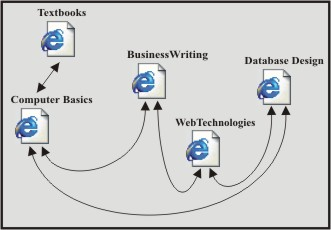Линейная структура (последовательная). Веб-страницы идут одна за другой, и пользователь должен просматривать их как слайд-шоу. Линейные (последовательные) структуры можно использовать в тех случаях, когда материал выстраивается в логическую цепочку. Так, описание отдельных учебников Computer Basics, Business Writing, Web Technologies, Database Design, подготовленных и изданных в Трейнинговом Центре, может быть распределено по отдельным последовательным страницам, и пользователь от одной страницы может переходить к следующей или предыдущей. Последовательная структура, показанная на рисунке, является круговой – каждая страница имеет следующую и предыдущую. Так, от страницы Computer Basics возможны переходы к страницам Business Writing и Database Design, от страницы Business Writing к Computer Basics и Web Technologies и т.д
Древовидная структура (иерархическая).Пользователь при заходе на главную страницу оказывается перед выбором, куда идти дальше.
После перехода в нужный раздел, он подбирает необходимый подраздел и т. п. Иерархические структуры можно использовать в тех случаях, когда содержимое каждой страницы (кроме) первой, входит на правах подраздела в страницу более высокого уровня.
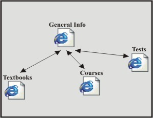Так, общие сведения о Трейнинговом Центре могут быть представлены на главной странице GeneralInfo (общая информация), а описание предлагаемых курсов, подготовленных книг и тестовых вопросов может быть распределено по страницам Textbooks, Courses, Tests (учебники, курсы, тесты), являющимся подразделами содержания страницы GeneralInfo. В иерархической структуре стрелки определяют возможные переходы между страницами– возможны переходы от страницы GeneralInfo к страницам Textbooks, Courses, Tests, а также обратные переходы.
Решетчатая структура (комбинированная).В ней все страницы размещаются в различных ветках. У пользователя есть возможность перемещаться по ним не только вертикально (вверх-вниз) но и горизонтально (то есть между ветками на разных уровнях).
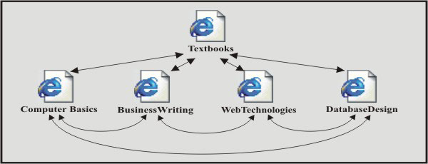Как правило, ссылки на все разделы сайта с краткими анонсами их содержимого приводится на первой, так называемой стартовой странице, которой присваивается имя index.htm (.html). Если тематические рубрики содержат собственные подразделы, каждая из них также имеет свою стартовую страницу, называющуюся index.html.
39. Охарактеризуйте динамическую и статическую компоновку сайта.
Для того чтобы избежать «съезжания» элементов html-документа друг относительно друга при изменении параметров экрана, применяется следующий прием: все компоненты web-страницы заключаются в соответствующие ячейки невидимой таблицы, при этом каждому объекту назначается одно, строго определенное положение. Данной таблице можно назначить строго определенную ширину в пикселах, например, 640 точек, после чего жестко позиционировать ее по центру экрана или «прижать» к левому его краю. Такой вариант компоновки сайта можно назвать статическим, поскольку ширина таблицы не меняется в зависимости от экранного разрешения. Разумеется, при изменении параметров экрана не происходит ни малейшего смещения элементов дизайна страницы.
Другой подход — когда ширину невидимой таблицы, содержащей фрагменты web-страницы, задают в процентах от текущей ширины экрана. При увеличении экранного разрешения таблица «растягивается» по горизонтали, и все размещенные в ее ячейках элементы, позиционированные либо по центру, либо по краям столбцов, смещаются согласно установленному алгоритму. В силу того, что параметры таблицы изменяются в зависимости от настроек экрана, такой принцип компоновки html-документа можно назвать динамическим. Документ растягивается по всей ширине экрана, не остается неиспользованных пустых полей.
40. Опишите внутреннюю SEO-оптимизацию сайта.
Внутренняя оптимизация сайта — это комплекс мер, направленных на улучшение восприятия ресурса поисковыми системами и пользователями.
В рамках реализации этой составляющей SEO улучшается состояние сайта, и в результате он движется вверх в выдаче поисковика. Для внутренней оптимизации необходимо провести такие работы:
- подобрать подходящие для раскрутки вашего ресурса ключевые слова и составить из них семантическое ядро;
- исправить технические ошибки, в том числе в коде, повысить скорость загрузки и избавиться от битых страниц;
- оптимизировать размещённые на сайте изображения, чтобы страницы загружались быстрее;
- повысить удобство использования ресурса (юзабилити). Веб-мастера, как правило, незаслуженно игнорируют этот аспект оптимизации. Но сегодня наспех подготовить лендинг недостаточно, требуется внимание к комфорту посетителя и дизайну. Так, например, кнопки лучше делать не угловатыми, а округлыми. Как показывают результаты исследований, пользователи в разы чаще кликают именно по ним, а это важный фактор конверсии;
- оптимизировать структуру сайта (составить его карту);
- провести перелинковку (при помощи взаимных ссылок связать между собой страницы ресурса);
- поработать над description, title и заголовками формата H1–H6.
Есть небольшой секрет. Изображения для размещения на сайте можно оптимизировать при помощи инструментов Photoshop. Выберите в меню «Сохранить для web», и это позволит вам избавиться сразу от двух проблем:
- уменьшится объём и вес изображения;
Внутренняя оптимизация сайта – изменение содержимого ресурса с целью более полной и более быстрой его индексации поисковыми системами. Это:
- Размещение нового контента и редактирование старого.
- Создание файла robots.txt или его корректировка.
- Редактирование мета-тегов description и title.
- Редактирование программного кода.
- Внутренняя перелинковка страниц. Работа с ключевыми словами.
- Изменение юзабилити.
- Изменение дизайна.
41. Опишите внешнюю SEO-оптимизацию сайта.
Внешняя оптимизация нацелена на улучшение внешних факторов ранжирования, то есть репутации в сети и показателей ссылок.
Внешнее SEO – это процесс оптимизации внешних факторов ранжирования для повышения популярности, опыта, авторитета, доверия и релевантности веб-сайта.
Внешняя оптимизация работает путем создания ссылок для SEO и увеличения количества упоминаний бренда на веб-сайте. Внешнее SEO улучшает видимость сайта в поисковых системах и посещаемость, поскольку Google учитывает данные за пределами сайта при ранжировании веб-страницы.
В рамках внешней оптимизации проводятся такие работы:
- готовится и размещается контент, способный заинтересовать пользователей. Они будут распространять информацию и тем самым увеличивать количество ссылок в интернете;
- сайт регистрируется в специализированных каталогах. При выборе таких площадок стоит отдавать предпочтение не слишком заспамленным и соответствующим по тематике;
- ссылки размещаются в средствах массовой информации web 2.0. Речь идёт о платформах, на которых пользователи имеют возможность размещать свой контент, созданный, как правило, самостоятельно. Это, например, Яндекс.Дзен, Википедия, ТЖ и vc.ru;
- ресурс активно популяризируется через тематические блоги и форумы.
42. Охарактеризуйте верстку веб-страниц.
Верстка сайта – это преобразование готового макета в продукт, состоящий из языка разметки HTML и CSS.
Верстка – это про Frontend, в основу которого входит язык разметки HTML, базис любого сайта.
HTML позволяет показывать страницы и контент, размещенный на них, в заданном порядке. Работа с языком разметки заключается в описании тегов.
Табличная верстка
Первый вид верстки, с которого началась эпоха сайтов. Именно через таблицы создавались простые веб-ресурсы в далеком 2000-м году. При табличной верстке страница поделена на соседствующие ячейки, что напоминает стандартную работу с таблицами в Excel.
Минус такого подхода состоял в том, что приходилось создавать дополнительные таблицы, которые впоследствии могли остаться пустыми.
Блочная верстка
Самый актуальный вид верстки сайтов – блочный. Он основан на теге <div>, с помощью которого создаются контейнеры, включающие в себя весь контент страницы или отдельного блока. Например, мы можем разделить сайт на несколько блоков: первый экран, о компании, контакты – для каждого блока будет отведен свой тег <div>. Внутри тега <div> уже находятся другие теги, отвечающие за те или иные элементы.
При таком подходе язык разметки HTML всегда взаимодействует с CSS-стилями, которые преобразуют обычную страницу в стильное дизайнерское решение: добавляются цвета, устанавливаются отступы для элементов, задается базовая анимация и многое другое. HTML и CSS обычно хранят в разных файлах – такой подход позволяет быстро вносить изменения и не путаться в больших проектах.
43. Опишите файловую структуру сайта.
С позиции разработчика, сайт условно можно подразделить на два уровня – логический и физический. На логическом уровне сайт представляет собой совокупность веб-страниц, объединенных между собой единым дизайном, стилем и ссылками. При этом на физическом уровне сайт является и набором файлов разного типа – в состав могут входить программы, документы, изображения и многое другое. Продумывание и создание удобной файловой структуры помогает не только разработчику оптимизировать свою работу, но и посетителю лучше понять строение сайта.
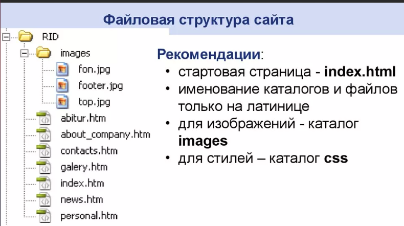Прежде чем создавать в корне сайта папки и файлы, необходимо разработать структуру сайта – какие разделы и подразделы будут присутствовать, как они будут называться.
Каждый раздел представляет собой один HTML-документ, который следует создать и дать ему имя. Имена файлов лучше называть латинскими символами без пробелов в нижнем регистре.
Стартовая страница сайта называется index.html. Входные страницы разделов также называются index.html. Это сделано потому, что запрос от клиента (браузера) может быть не к конкретному документу, а к каталогу.
Все изображения, применяемые на веб-страницах, принято хранить в папке с именем images или img.
44. Опишите линейную карту сайта.
Это самая элементарная структура сайта. Web-страницы идут одна за другой, пользователь должен просматривать их как презентацию или слайд-шоу.
Очень важно, чтобы на каждой странице сайта были название и ссылка на первую страницу, желательно также указывать общее количество страниц и обозначать ту, на которой в данный момент пользователь находится.
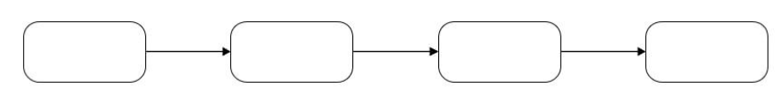Линейно-разветвленная
Линейно-разветвленная структура, представляет из себя цепочку переходов, иногда с правом выбора. Подойдет для небольших сайтов — в основном визиток.
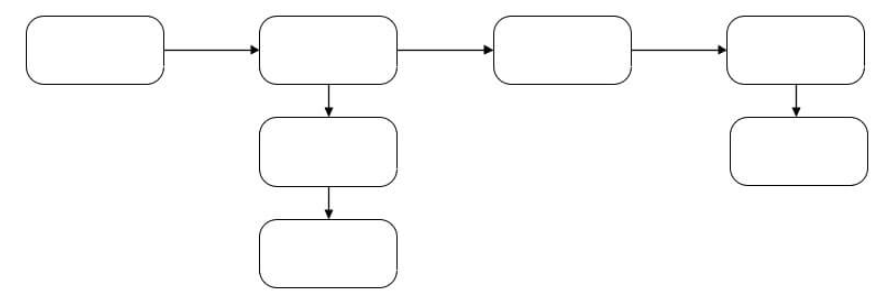45. Опишите иерархическую карту сайта.
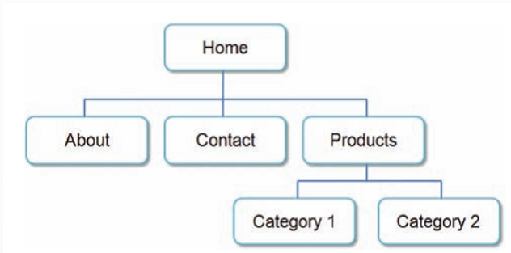Как видно, здесь присутствует ярко-выраженная иерархия, где на главной странице (Home) определены ссылки на главные разделы сайта, у каждого раздела могут быть еще подразделы, как например, у раздела Продукты (Products), есть два подраздела.
46.Опишите пирамидальную карту сайта
Карта сайта — это визуальное представление структуры вашего сайта. Идеальная карта сайта имеет форму пирамиды с одной вводной (домашней) страницей вверху, ожидаемыми и стандартными элементами навигации под ней, приоритетными группировками предметных областей далее и отдельными страницами и сообщениями в самом низу.
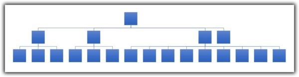Множество ресурсных файлов образуют подобие пирамиды. Подобная структура нашла отражение на множестве сайтов, которые помимо информационной части содержат также единый каталог для хранения файлов программ, доступных для скачивания.
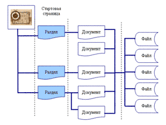47.Опишите диаметральную карту сайта
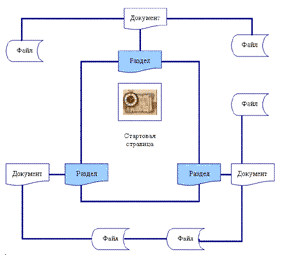(Это единственное что есть про это ☹)
48.Опишите цветовую модель RGB
Цветовая модель RGB — самый популярный способ представления графики, который подходит для описания цветов, видимых на мониторе, телевизоре, видеопроекторе, а также создаваемых при сканировании изображений.
Модель RGB используется при описании цветов, получаемых смешиванием трех лучей: красного (Red), зеленого (Green) и синего (Blue). Из первых букв английских названий этих цветов составлено название модели. Остальные цвета получаются сочетанием базовых. Цвета такого типа называются аддитивными, поскольку при сложении (смешивании) двух лучей основных цветов результат становится светлее. На рис. 1 показано, какие цвета получаются при сложении основных.
В модели RGB каждый базовый цвет характеризуется яркостью, которая может принимать 256 значений — от 0 до 255.
Каждому цвету можно сопоставить код, используя десятичное и шестнадцатеричное представление кода. Десятичное представление — это тройка десятичных чисел, разделенных запятыми. Первое число соответствует яркости красной составляющей, второе — зеленой, а третье — синей. Шестнадцатеричное представление — это три двузначных шестнадцатеричных числа, каждое из которых соответствует яркости базового цвета. Первое число (первая пара цифр) соответствует яркости красного цвета, второе число (вторая пара цифр) — зеленого, а третье (третья пара) — синего.
49.Опишите цветовую модель CMYK
При печати на бумагу наносится краска — материал, который поглощает и отражает цветовые волны различной длины. Таким образом, краска выступает в роли фильтра, пропускающего строго определенные лучи отраженного цвета, вычитая все остальные.
Цветовую модель CMYK используют для смешения красок печатающие устройства — принтеры и типографские станки. Цвета этой модели получаются в результате вычитания из белого базовых цветов модели RGB. Поэтому их называют субтрактивными.
Базовыми для CMYK являются следующие цвета:
- голубой (Cyan) — белый минус красный (Red);
- пурпурный (Magenta) — белый минус зеленый (Green);
- желтый (Yellow) — белый минус синий (Blue).
Помимо этих, используется еще и черный цвет, который является ключевым (Key) в процессе цветной печати. Дело в том, что реальные краски имеют примеси, поэтому их цвет не соответствует в точности теоретически рассчитанным голубому, пурпурному и желтому. Смешение трех основных красок, которые должны давать черный цвет, дает вместо этого неопределенный грязно¬коричневый. Поэтому в число основных полиграфических красок и внесена черная.
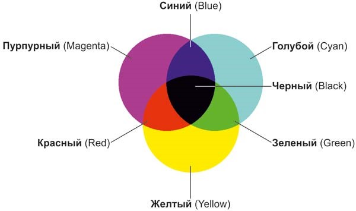50. Опишите цветовую модель HSB
Модель HSB упрощает работу с цветами, так как в ее основе лежит принцип восприятия цвета человеческим глазом. Любой цвет определяется своим цветовым тоном (Hue) — собственно цветом, насыщенностью (Saturation) — процентом добавления к цвету белой краски и яркостью (Brightness) — процентом добавления черной краски.
Каждый цвет в этой модели получается путем добавления к основному спектру черной или белой краски. При этом тон — это собственно цвет и есть, насыщенность — процент добавленной к цвету белой краски, а яркость — процент добавленной чёрной краски.
Спектральные цвета, или цветовые тона, располагаются по краю цветового круга и характеризуются положением на нем, которое определяется величиной угла в диапазоне от 0 до 360°. Эти цвета обладают максимальной (100%) насыщенностью (S) и яркостью (B). Насыщенность изменяется по радиусу круга от 0 (в центре) до 100% (на краях). При значении насыщенности 0% любой цвет становится белым.
Яркость — параметр, определяющий освещенность или затемненность. Все цвета цветового круга имеют максимальную яркость (100%) независимо от тона. Уменьшение яркости цвета означает его затемнение. Для отображения этого процесса на модели добавляется новая координата, направленная вниз, на которой откладываются значения яркости от 100 до 0%. В результате получается цилиндр, образованный из серии кругов с уменьшающейся яркостью, нижний слой — черный.
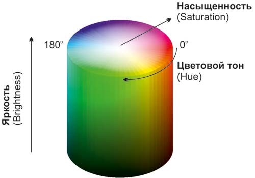51. Охарактеризуйте цветовой круг
Цветовой круг – способ представления цветов видимого спектра в условной форме, обозначающей различные цветовые модели. Секторы круга представляют определяемые цвета, размещённые в порядке условно близком к расположению в спектре видимого света, причём в круг добавлен условный пурпурный цвет, который связывает крайние спектральные цвета.
52. Опишите взаимодействие пользователя с сайтом в форме обратной связи
Форма обратной связи на сайте – это механизм для общения между посетителем ресурса и его администраторами.
Пользователь, благодаря форме обратной связи, может получать ответы на интересующие его вопросы от администрации сайта, проходить анкетирование для улучшения качества сайта, приём заказов и заявок на обратные звонки.
53. Опишите взаимодействие пользователя с сайтом с использованием форума
Веб-форум – интернет-сервис для общения между пользователями интернета на одну или на несколько тем.
Суть работы форума заключается в создании своих тем и последующим обсуждением, путём постинга сообщений, внутри этих тем. Отдельно взятая тема, по сути, представляет собой тематическую гостевую книгу. Пользователи могут комментировать заявленную тему, задавать вопросы по ней и получать ответы, а также сами отвечать на вопросы других пользователей форума и давать им советы.
54. Опишите взаимодействие пользователя с сайтом с использованием отслеживания и анализа данных о скроллинге страниц сайта
Для повышения эффективности сайта, увеличения количества заказов, количества целевых действий важно оценить взаимодействие посетителя с сайтом. Понять, как он перемещается по сайту, с какими препятствиями и сложностями встречается поможет анализ пути пользователя.
Информация об этапах путешествия посетителя по сайту поможет:
- Определить точки входа и точки выхода с сайта.
- Описать общий сценарий поведения пользователя на сайте.
- На основе позитивного и негативного опыта использования ресурса выявить и исправить недочеты. В случае подготовки редизайна сайта – устранить такие недочеты еще на этапе разработки нового дизайна.
55. Опишите вертикальную навигацию как интерфейс сайта
Вертикальная навигация – прямая альтернатива горизонтальной навигации – меню, расположенное, чаще всего, в левой колонке страницы.
Плюсы:
- Простота редактирования и неограниченная возможность расширения меню – отличный вариант для интернет-магазинов
- Оптимально для разных устройств
Минусы:
- В развернутом виде может перекрывать контент
- Нижние навигационные элементы малозаметны
56. Опишите модальные вкладки как интерфейс сайта.
Модальные вкладки создает режим, который отключает главное окно, но сохраняет его видимым с модальной вкладкой. Пользователи должны взаимодействовать с модальной вкладкой, прежде чем они смогут вернуться на главную страницу. Чаще всего используется в виде баннеров.
57. Опишите слайдер как интерфейс сайта
Слайдер - это элемент веб-дизайна, представляющий собой динамический блок определённой ширины. Он дает возможность показывать несколько элементов по очереди в ручном или автоматическом режиме. Слайдер позволяет ярко и компактно представить информацию (например, изображение и текст), тем самым привлекая внимание пользователя.
58. Опишите отображение коллекций как интерфейс сайта.
Коллекции используются для хранения групп объектов. Это означает, что типы и структуры значений не могут содержаться в коллекции изначально. Тем не менее, можно удерживать значение или структуру в объекте, используя концепцию упаковки. Когда значение присваивается объекту, оно запаковывается и ведет себя как объект ссылочного типа. Позже объект может быть преобразован обратно в значение или распакован, приведя его к исходному типу данных.
59. Опишите информационную панель как интерфейс сайта
Информационная панель сайта (или информационный блок) - это часть веб-сайта, которая предоставляет информацию о сайте или его элементах. Она может содержать различную информацию, в том числе:
- Логотип или заголовок сайта
- Навигационные ссылки на различные страницы сайта
- Краткое описание сайта или его преимущества
- Контактную информацию (адрес, телефон, электронная почта)
- Ссылки на акции, новости или другие важные события, связанные с сайтом
- Ссылки на социальные сети и другие ресурсы, связанные со страницей.
Информационная панель находится обычно в верхней части страницы сайта и является одним из ключевых элементов для навигации по сайту и повышения удобства использования сайта для пользователей (шапка и подвал сайта).
60. Опишите аудит юзабилити веб-сайта.
Юзабилити-аудит — это проверка сайта на удобство работы с ним. В ходе анализа обычно выявляют и описывают проблемы в навигации, дизайне страниц и элементов, текстовом и визуальном контенте, а также функционале ресурса или проработке путей пользователей.
В результате юзабилити-аудита обычно составляется документ, где подробно разъясняются проблемы на сайте и предлагаются их решения, а также для примера приводятся лучшие практики.